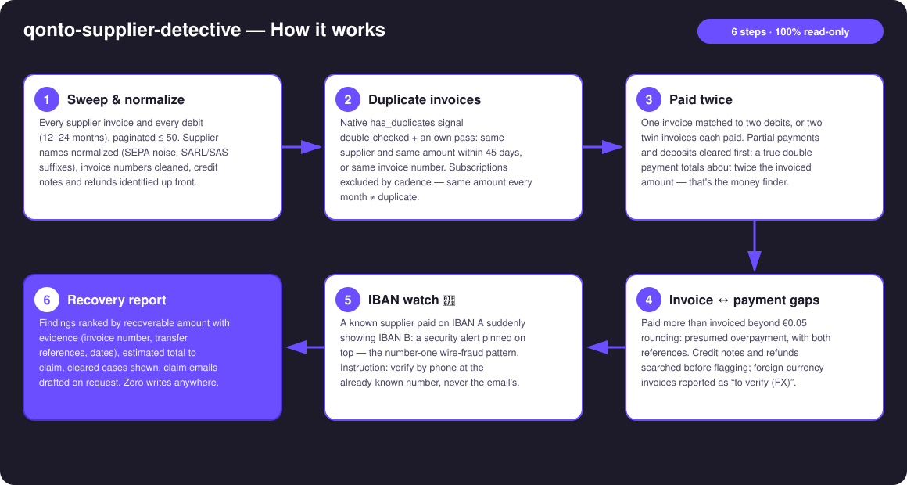
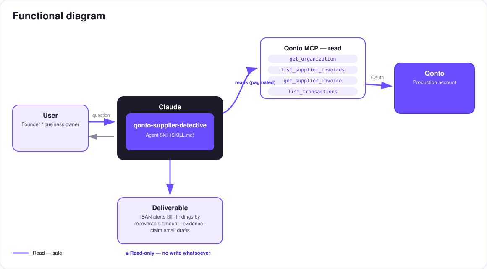

The detective for your supplier payments — duplicates, double payments, amount gaps and IBAN changes, evidence included.
In most companies, a small share of supplier payments are simply mistakes — duplicates, invoices paid twice, overpayments — and nobody ever goes looking. The skill sweeps every supplier invoice and every debit, hunting 4 anomalies:
Same supplier + same amount within days, or same invoice number; native has_duplicates double-checked. Subscriptions excluded by cadence detection.
1 invoice, 2 debits: the finding that pays. Partial payments and deposits recognized as legitimate — a true double payment totals ≈ 2× the invoice.
Paid more than invoiced beyond rounding; credit notes and refunds checked before flagging, foreign currency reported "to verify".
A known supplier whose IBAN changed = a security alert pinned on top — the number-one wire-fraud pattern. Instruction: verify by phone at the known number.
Would someone run this on a Monday morning? It's the audit nobody has time to do by hand — and it can pay for itself on the first run.
| Prerequisite | Detail | Required |
|---|---|---|
| Qonto production account | Adapts to any organization — get_organization first, nothing hardcoded | ✅ |
| Country | No national rules involved: the detectors compare the account's own data with itself. Every Qonto country (FR, DE, ES, IT, AT, NL, BE, PT) | ℹ️ detected |
| Qonto MCP connected | Official connector (claude.ai / Claude Desktop), OAuth login | ✅ |
| Supplier invoices imported | The more there are, the larger the detection surface. Without them: a transaction-only pass, stated plainly | ⭕ recommended |
| ≥ 6 months of history | Below that: subscription cadences and IBAN tracking are less reliable — the skill says so | ⭕ |

emitted_at (1–2 day drift on settled_at) · status filters not exposed on this MCP → client-side filtering on status
100% read-only — the detective touches nothing; it hands you the case file. No Qonto write tool is ever called: nothing to approve, nothing executed. And for an IBAN change the instruction never varies: verify by phone at the number you already know — never the one in the email announcing the change.
| Detector | What it hunts | The false positive it clears first |
|---|---|---|
| D1 · Duplicates | Same supplier + same amount within 45 days, or same invoice number; native has_duplicates | Subscriptions: same amount at a regular monthly cadence = recurrence, not duplicate |
| D2 · Paid twice | 1 invoice ↔ 2+ debits; two twin invoices each paid | Partials / deposits: debits sum to the invoice (≠ 2×); refund received = case closed |
| D3 · Gaps | Paid > invoiced beyond €0.05 rounding | Credit notes explaining the gap; foreign currency → "to verify (FX)" |
| D4 · IBAN watch 🚨 | Known supplier paid on IBAN A → suddenly IBAN B | Legitimate bank switch: the alert demands verification, it doesn't accuse — but always before the next payment |
| Output | Format | When |
|---|---|---|
| Conversation reply | Markdown report: IBAN alerts 🚨 on top, findings ranked by recoverable amount, estimated total, cleared cases | Always — the baseline |
| Interactive case file | HTML file/artifact: findings board, evidence cards, recoverable gauge, IBAN alert banner | When the host renders files (claude.ai artifacts, Claude Desktop, Claude Code); automatic fallback to markdown |
| Claim email | Ready-to-send draft: invoice number, both transfer references, dates, amount — IBANs masked | On request, finding by finding |
The ≤ 3-minute demo attached to the PR walks through: the problem → the sweep (the volume on screen) → the case file with an IBAN alert → the double payment, quantified, with its claim email ready to send → the read-only wrap-up. It runs live on a real production account.
| Idea | Effort | Note |
|---|---|---|
| Send the claim through a Gmail MCP detected dynamically | Low | Optional multi-MCP enrichment — the core stays Qonto-pure |
Flag disputed invoices (change_supplier_invoice_status) | Medium | Would leave read-only territory — strictly opt-in |
| Post-cancellation billing detection: a subscription still charging after a declared cancellation | Medium | Reuses the cadence engine |
| Scheduled quarterly audit with a diff vs the previous report | Low | Turns the IBAN watch into true monitoring |
| Multi-currency reconciliation with daily FX rates | Medium | Turns "to verify (FX)" into verdicts |